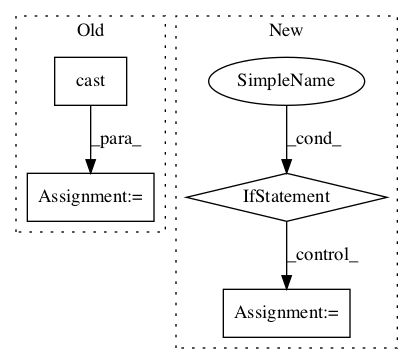

7ab8bc6a70982aa79c36c20678c98becb7f291b1,deepctr/layers/utils.py,Hash,call,#Hash#Any#Any#,42

Before Change
name=None) // weak hash
if self.mask_zero:
mask_1 = tf.cast(tf.not_equal(x, "0"), "int64")
mask_2 = tf.cast(tf.not_equal(x, "0.0"), "int64")
mask = mask_1 * mask_2
hash_x = (hash_x + 1) * mask
return hash_x
After Change
def call(self, x, mask=None, **kwargs):
if x.dtype != tf.string:
zero = tf.as_string(tf.zeros([1], dtype=x.dtype))
x = tf.as_string(x, )
else:
zero = tf.as_string(tf.zeros([1], dtype="int32"))
num_buckets = self.num_buckets if not self.mask_zero else self.num_buckets - 1
try:
hash_x = tf.string_to_hash_bucket_fast(x, num_buckets,
name=None) // weak hash
In pattern: SUPERPATTERN
Frequency: 3
Non-data size: 4
Instances
Project Name: shenweichen/DeepCTR
Commit Name: 7ab8bc6a70982aa79c36c20678c98becb7f291b1
Time:
Author: null
File Name: deepctr/layers/utils.py
Class Name: Hash
Method Name: call
Project Name: Bihaqo/t3f
Commit Name: 4c92f34eef3f2f88768c48acd2a52b21209dc28b
Time:
Author: null
File Name: t3f/riemannian.py
Class Name:
Method Name: project
Project Name: NifTK/NiftyNet
Commit Name: 946c74ea83f93967e28c585d0bbcd17afbfebb13
Time:
Author: null
File Name: niftynet/layer/loss_segmentation.py
Class Name:
Method Name: cross_entropy